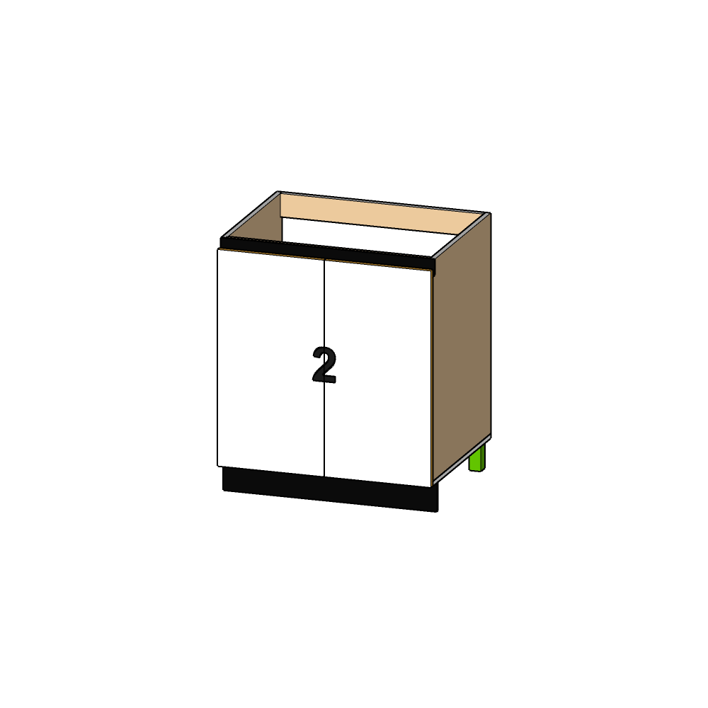

حوض · محمد عزت 2

| # | القطعة | الخامة | المقاس (سم) | العدد |
|---|---|---|---|---|
| H | درفة شمال | LUMBER J-G823 | 75 × 37.3 | 1 |
| I | درفة يمين | LUMBER J-G823 | 75 × 37.3 | 1 |
| A | ج.شمال | بورديوم | 76.3 × 58 | 2 |
| B | أرضية | بورديوم | 75 × 58 | 1 |
| C | م.أمامي | بورديوم | 71.6 × 8 | 1 |
| D | م.خلفي | بورديوم | 71.6 × 8 | 1 |
Cabinet Neo